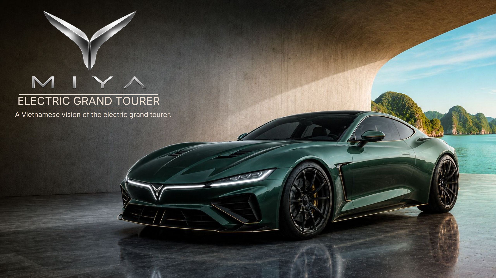

Case study · Automotive Concept & Visual Development
MIYA
Electric Grand Tourer
An independent electric grand tourer concept exploring a Vietnamese expression of contemporary luxury: calm power, sculpted proportion, material warmth and a strong visual identity designed as one coherent experience.
The objective
A Vietnamese vision of the grand tourer.
MIYA begins with a simple positioning: luxury expressed through confidence rather than excess. The visual language draws from landscape, craft, tradition and quiet strength, translating those references into proportion, surfaces, materials and atmosphere.
The project is presented as a design study rather than a production engineering specification. Its purpose is to establish a coherent automotive identity and demonstrate how one design philosophy can connect exterior form, interior experience and brand expression.
Design philosophy
Poise. Luxury. Calm power.
The reference language combines Vietnamese landscape, water, rice fields, buffalo, craft, lacquer, architecture and sculptural forms. The intention is not to decorate the car with cultural motifs, but to extract qualities of balance, material richness, restraint and enduring presence.

Proportion
Form follows emotion.
The silhouette is built around grand-touring proportions: a long hood, cabin set back, muscular rear volume, a low and wide stance and a clean flow from front to rear. The objective is planted confidence without visual heaviness.

Exterior identity
One face. One gesture. Front to rear.
The front and rear are treated as related identity moments rather than separate styling exercises. Lighting, width, graphic tension and the central MIYA signature create recognition while the body remains clean and sculptural.


Sculpture
Every curve has a purpose.
Close-up studies test whether the design language survives beyond the hero view. Hood volumes, wheel architecture, air channels, mirror treatment, rear shoulders and lower aero surfaces are considered as parts of the same form system.

Interior vision
Space to be. Not just to drive.
The cabin shifts the project from performance object to grand-touring environment. Warm wood, dark textiles, restrained metallic accents and integrated technology support a lounge-like atmosphere in which craftsmanship remains visually dominant.

Driver experience
Luxury is calm.
The final context studies place MIYA in motion across Vietnamese environments. The emphasis is serenity, confidence and continuity between vehicle and landscape rather than theatrical speed.

Final statement
A coherent identity, not a collection of styling cues.
The project’s value is the continuity between philosophy, silhouette, front and rear graphics, surface treatment, interior materiality and brand expression. Each layer reinforces the same idea of contemporary Vietnamese grand-touring luxury.
